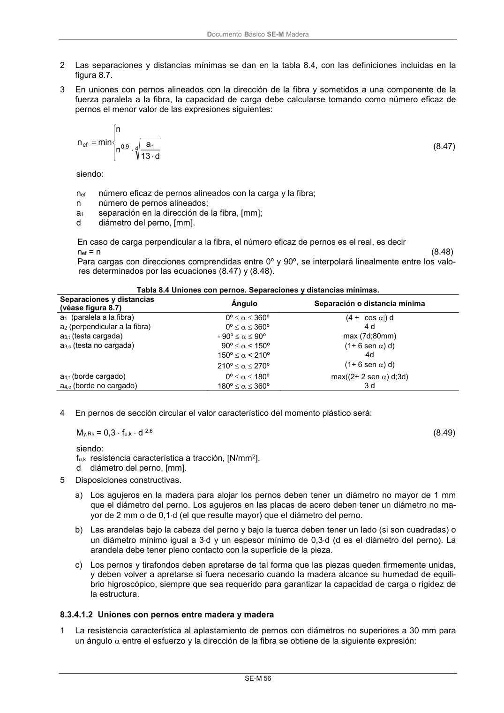

DB-SE-M Madera · edición 2019-12-20 · capa oficial
Documento DB-SE-M-oficial · SHA-256 del PDF 26b5819839ebfda78b0b119c5e76a0a37773b0d763c05688541870075df93718
Copia fiel del PDF fuente · Fuente oficial
Ficha de la disposición en la fuente oficial
Formatos: JSON del segmento · Markdown
Disposiciones constructivas. a) Los agujeros en la madera para alojar los pernos deben tener un diámetro no mayor de 1 mm que el diámetro del perno. Los agujeros en las placas de acero deben tener un diámetro no ma- yor de 2 mm o de 0,1d (el que resulte mayor) que el diámetro del perno. b) Las arandelas bajo la cabeza del perno y bajo la tuerca deben tener un lado (si son cuadradas) o un diámetro mínimo igual a 3d y un espesor mínimo de 0,3d (d es el diámetro del perno). La arandela debe tener pleno contacto con la superficie de la pieza. c) Los pernos y tirafondos deben apretarse de tal forma que las piezas queden firmemente unidas, y deben volver a apretarse si fuera necesario cuando la madera alcance su humedad de equili- brio higroscópico, siempre que sea requerido para garantizar la capacidad de carga o rigidez de la estructura.
